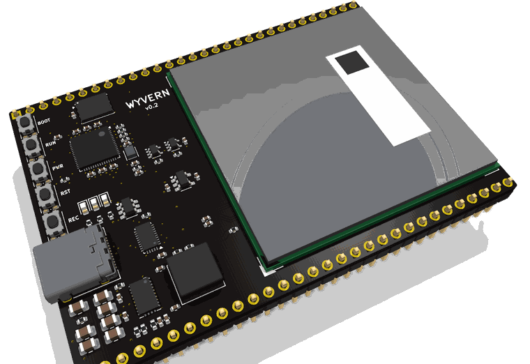

Blog ·
Wyvern, a Snapdragon module on one flat board
- examples
- wyvern
- usb-c
- power
- signal-integrity
Wyvern is a Snapdragon development board laid out like a Teensy, the small microcontroller board. A Qualcomm QCS6490 module for Linux or Android shares the board with an RP2350 microcontroller on 30 pins. We, Team Reagent, asked for it as an example of what Via, our board design workcenter, can make. An AI agent designed it with Via's tools, skills and checks, and we read its work and its mistakes.

The board is 76.2 x 53.34 mm. One USB-C cable powers it and carries USB 3. The Wyvern page shows it in 3D.
Why the Snapdragon comes on a module
A Snapdragon chip needs fast memory, flash and power chips around it. Those parts sit on a board with microvias, tiny laser-drilled holes between neighboring layers. Via's generator draws only through vias, holes drilled through every layer. So the processor comes on a module, a small board that holds all of those parts.
Vantron's VOSM6490 carries the QCS6490 with 8 GB of LPDDR5 memory and 64 GB of flash. The 45 x 45 mm module follows SGET's Open Standard Module specification, OSM, version 1.2. An OSM module has no connector: 662 flat pads underneath solder to the board like any other chip. The agent built those pads from the standard's contact map, and they match Antmicro's open footprint.
Why a fast pair needs 90 ohm
The module's USB port runs at 5 Gbps, so each bit lasts 200 ps. In that time a signal covers about 3 cm of board, and its edges are shorter still. A trace that is long compared with an edge acts as a transmission line. The signal travels as a wave, and the trace's shape sets the impedance the wave meets. Where that impedance changes, part of the wave reflects and smears the bits behind it.
USB sends each signal on a pair of traces, one the mirror image of the other. The receiver reads the difference, so noise on both traces cancels. USB pairs are built for 90 ohm across the two traces. A wider trace or a thinner insulating layer under it lowers that impedance, and so do closer traces.
Wyvern's pairs are 0.25 mm traces 0.15 mm apart, 0.21 mm above a ground plane. The agent sized them with IPC-2141's formula for edge-coupled microstrip, two traces side by side over a plane. In 1980, E. Hammerstad and Ø. Jensen published more exact formulas for one microstrip line. Their paper is "Accurate Models for Microstrip Computer-Aided Design", IEEE MTT-S International Microwave Symposium Digest. Brian C. Wadell's Transmission Line Design Handbook (Artech House, 1991) gathers such formulas for coupled lines too. The bottom layer's pairs also need a ground plane, so Wyvern has six layers instead of four.
A plug that fits both ways
A USB-C plug goes in either way up, so the receptacle has two mirrored rows of contacts. One wire in the cable, CC, tells each end how the plug sits. The charger pulls CC up, and the board pulls each of its two CC pins down through 5.1 kohm. The charger turns on its 5 V only after it detects that pull-down. The CC pin that finds the pull-up tells the board which way up the plug is. The USB Implementers Forum sets these rules in its USB Type-C Cable and Connector Specification.
On Wyvern, a TI HD3SS3220 holds those pull-downs even with its own supply off. So a charger powers up a cold board. The module has one SuperSpeed lane, USB 3's fast pairs to send and receive. The HD3SS3220 switches that lane to the side of the receptacle the plug uses. One pair lands with its wires swapped, to stay on one layer. A USB 3 receiver detects a swapped pair during link training and flips it.
A converter that pushes back on its supply
The module's supply must stay between 4.8 and 5.2 V, at up to 3 A. A cable carrying 3 A can lose up to half a volt of a charger's 5 V. So a TI TPS552892 buck-boost converter, which steps voltage down or up, makes a steady 5.0 V. Via simulates it at every corner, each part at its tolerance limits, and gets 4.86 to 5.17 V.
This converter holds its output steady, so it draws the same power whatever its input. Raise its input voltage and its current falls, the reverse of a resistor. To the supply it looks like a negative resistance: minus the input voltage squared, over the power. At 4.0 V in and the charger's full 3 A, that is minus 1.33 ohm.
The cable's inductance and the board's input capacitors form a resonant circuit. Like a struck bell, it rings at one frequency, and there the input's impedance peaks. R. D. Middlebrook set the rule for this in 1976. His paper is "Input Filter Considerations in Design and Application of Switching Regulators", IEEE Industry Applications Society Annual Meeting. The rule: keep the filter's impedance well under the converter's input impedance, or the two can oscillate.
Wyvern meets the rule with a damper across the input: C42, 22 uF, in series with R45, 0.33 ohm. The resistor absorbs energy at the resonance, and the capacitor keeps DC out of it. The simulation puts the peak at 0.26 ohm at 37 kHz, and 0.51 ohm at the worst corner. Both sit under the 1.33 ohm. The first version had no damper and kept only 0.13 ohm of margin.
A converter's switching puts energy at its own frequency and at whole multiples, its harmonics. Via's frequency plan holds a band of 12.8 to 122 kHz around the cable's resonance. None of the first 10 harmonics of the three clocks in the plan lands in it. The converter runs in forced PWM, switching at a fixed 746 kHz at any load. Power-save mode would sweep its rate through the band as the load changes.
How the design went
We asked for Wyvern on 2026-11-11: a compact board like a Teensy, with a Snapdragon on it. The first version, v0.1, put a Snapdragon 845 module on three sockets over a 60.96 x 30.48 mm stick. Its first route left the RP2350's core pins bare, boxed in by capacitors and the crystal. The agent moved those parts and drew the core rail in the design file.
On 2026-11-12 we looked at v0.1 and saw loose ends in power, data and routing. It looked like two boards slapped together. We asked for one flat board with a QCS6490 module soldered straight on.
In v0.2 the agent read the module's pin tables with a script. The script lost three of the 17 power pads. The agent then read the 64 pads the board uses off the datasheet's pages. The list of mistakes records it as M163.
Routing took seven tries. The first two left the 5 V plane under the module in three pieces. A copper spine along the module's middle pad line held it together.
The last run of Via's four checks came back GREEN with 16 warnings. The schematic and board checks found no errors and no unconnected nets. Seven simulation decks ran 397 times at their corners with no failure. The gates report explains each warning.
What is still open
Nobody has made a Wyvern board, and it has no firmware yet. TI publishes no model of the TPS552892, so its control loop is not simulated. Ceramic capacitors lose capacitance under voltage, so the input's 42 uF is about 21 uF at 5 V. USB Type-C allows a device 10 uF at plug-in, unless it limits its inrush current. The SuperSpeed lane has no clamps against static discharge, and Vantron gives no thermal figures for the module. The v0.2 README lists every open item.
For v0.3 we want a load switch that limits the inrush, and static clamps on the SuperSpeed lane.